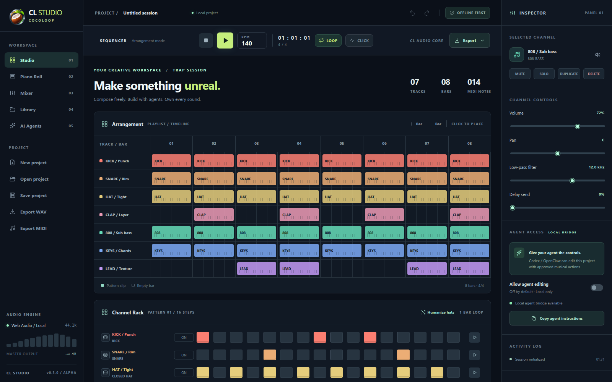
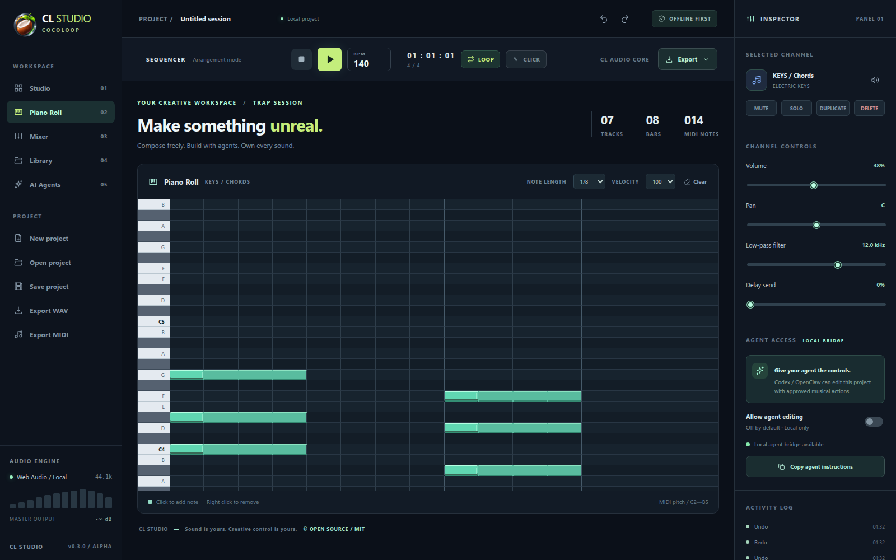
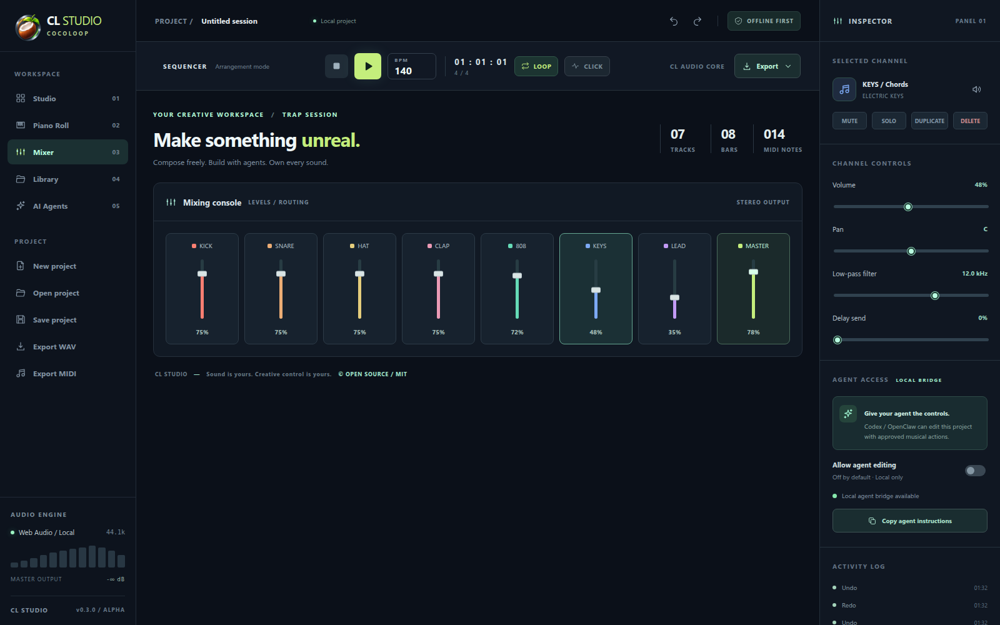
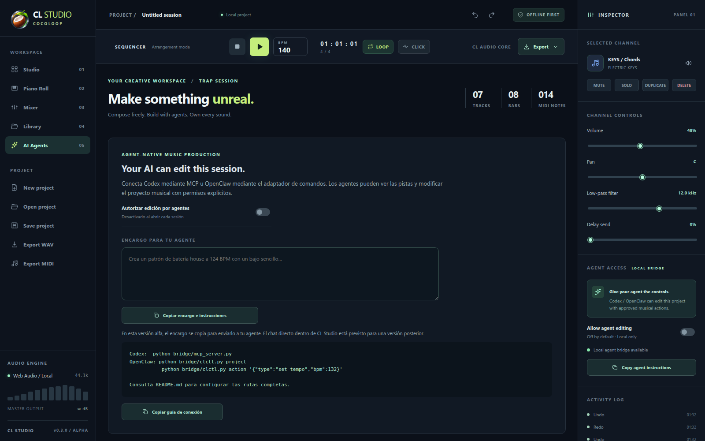
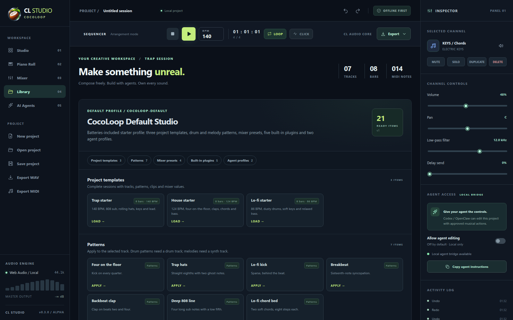
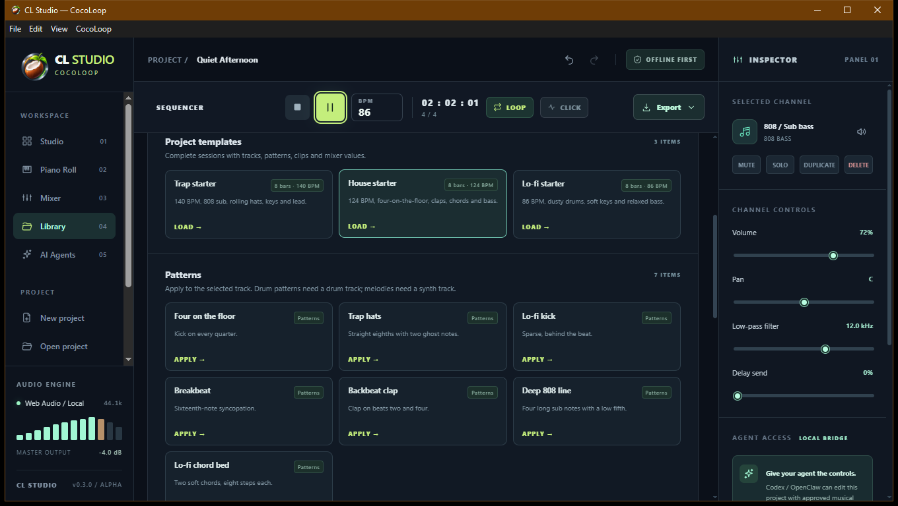
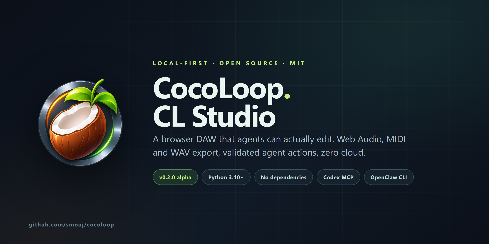

Make something unreal.
Own every sound.
CocoLoop CL Studio is a browser DAW built for humans and agents. Sequence drums, edit MIDI, mix and export WAV or MIDI — entirely on your machine.

A real workstation, not a demo.
Every item below is implemented and covered by tests or a reproducible browser check. Read the roadmap for what is still missing.
Arrangement & Channel Rack
1–32 bars, per-track pattern clips, 16-step sequencer, mute, preview and humanize.
Piano Roll
MIDI notes with length and velocity, right-click delete, automatic pitch labels and previews.
Mixer & master
Volume, pan, low-pass, delay send, master fader, compressor and live stereo meter.
Original instruments
Kick, snare, hat, clap, perc, 808 bass, electric keys, analog lead, soft pad and a sampler.
Exports that open elsewhere
Stereo 16-bit/44.1 kHz WAV, Standard MIDI File and portable JSON projects with embedded samples.
Shared undo
Human and agent edits share one history. Every agent batch is atomic and reversible.
Default library
21 ready items: templates, patterns, mixer presets, five role-aware plugins and agent profiles.
Windows desktop app
Native window, desktop shortcut and bundled server, MCP and CLI. No Python required.
Your agent edits the session, not the source code.
Codex connects over MCP stdio. OpenClaw uses a small CLI. Both hit the same validated action schema, gated by a consent switch that is off by default.
- 14 documented musical actions, no shell or file-system access.
- 1–64 actions per batch; all apply or none do.
- One undo step per transaction, visible in the Activity Log.
- Bearer token plus same-origin checks on the local bridge.
Dark, dense, deliberate.
The interface is original: deep blue-charcoal surfaces, lime highlights and instrument colours. No proprietary DAW trade dress.






Local by default. Narrow by design.
The bridge listens only on loopback, validates the Host header and requires a token for agent writes. The UI enforces a human consent toggle. Static files and API responses carry a restrictive CSP.
Not independently audited. Do not expose the port to the Internet. Report vulnerabilities through GitHub private advisories.
Read the security policyTwo commands. Your browser. Done.
No npm install, no account, no API key. Python 3.10+ is the only requirement.